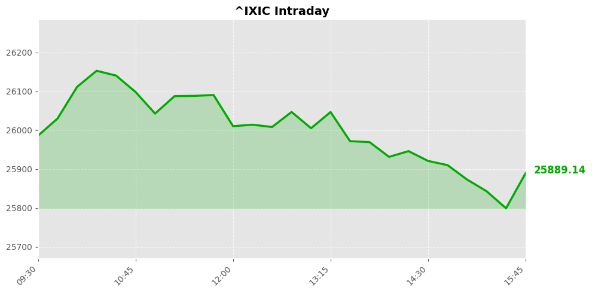
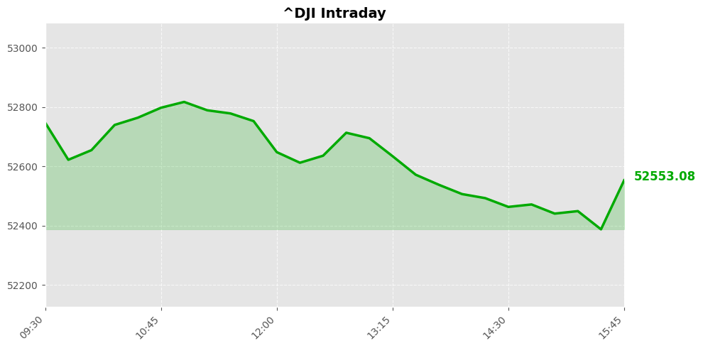
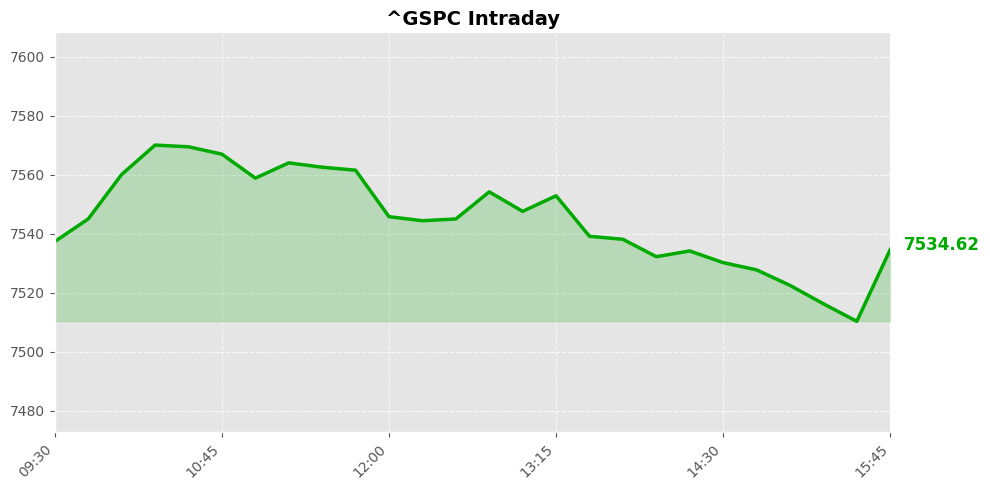

美股市场简报
2026年07月17日 | StockGate 美股通
📊 市场概览



今日美股三大指数集体收跌，市场风险偏好显著降温。科技股成为主要抛压源，纳斯达克指数大幅下挫 -1.47%，重挫 387.28 点。相比之下，道琼斯指数仅微跌 -0.2%，显示资金正从高估值成长股向防御型价值股转移，市场呈现明显的避险情绪。
盘面板块分化加剧，科技板块遭遇资金集中流出，拖累标普500指数回落 -0.51%。传统工业与金融权重则相对抗跌，起到了稳定大盘的作用。这种宽幅震荡表明主力资金在进行防御性调仓，高位的科技龙头承压，而低估值蓝筹成为资金避风港。
📰 今日要闻
【要闻焦点】 伊朗与美国双边军事摩擦升级，同时在争议背景下释放了一名美国公民。
【投资推演】 地缘政治风险急剧升温，直接催化原油板块及避险资产的超预期溢价。能源类龙头有望获得强劲支撑，而风险资产如美股科技板块可能面临短线承压。
【要闻焦点】 美国副总统万斯指出，以色列政府部分官员曾试图干预并影响美国对伊朗核协议的谈判立场。
【投资推演】 中东地缘博弈复杂化加剧了军工板块的长期需求预期，洛克希德马丁等军工龙头有望迎来估值修复。但外交不确定性可能对全球供应链造成扰动，引发市场对通胀重燃的担忧，导致成长股估值承压。
【要闻焦点】 路透社撤回了关于阿联酋迪拜市中心听到爆炸声的报道，澄清了此前引发恐慌的虚假地缘风险传闻。
【投资推演】 虚假新闻的澄清有效缓解了市场对中东战火蔓延至海湾金融中心的恐慌情绪。这对依赖中东枢纽的航空板块及原油价格形成短期回撤压力，避免了避险资产的过度飙升，有助于美股市场情绪回归基本面逻辑。
【要闻焦点】 CNBC投资俱乐部在7月月度会议中更新了股票投资组合，并明确点名了5只具备看多潜力的买入标的。
【投资推演】 华尔街明星机构释放的加仓信号对美股大盘具有风向标意义。在当前财报季密集披露期，精选个股策略将显著跑赢指数，资金有望加速向业绩确定性高的龙头股集中，带动相关产业链企稳反弹。
【要闻焦点】 机构表示正在削减对冲头寸，认为市场预期的降息可能需要更长时间才能落地。
【投资推演】 降息预期的推迟对小盘股和高杠杆企业构成严重利空。长久期成长股可能面临估值重估的风险，而短久期价值股及具备强劲自由现金流的标的则成为资金避风港，市场风格切换将加剧。
【要闻焦点】 对冲基金老兵的噩梦经验正警示当前市场，提醒投资者在乐观情绪中需保持警惕，防范突发黑天鹅事件。
【投资推演】 机构情绪趋于谨慎直接利好VIX波动率指数相关资产，做空波动率的策略面临承压。防御性配置需求上升，资金将从高beta的半导体板块向必需消费品和公用事业转移，以规避潜在的回撤风险。
【要闻焦点】 财务治疗师指出，高达42%的成年人在财务上依赖父母支持，家庭代际财富转移压力正在加剧。
【投资推演】 家庭财务紧张将抑制非必需消费品的支出意愿，对零售板块形成中长期利空。这倒逼年轻一代寻求稳健理财，可能利好财富管理平台及低门槛的金融科技股，相关平台用户活跃度有望实现突破。
【要闻焦点】 奈飞即将发布财报，投资者密切关注其广告支持业务表现、用户参与度指标及潜在的并购扩张计划。
【投资推演】 作为流媒体板块的绝对龙头，奈飞的业绩将定调行业风向。若广告收入实现超预期增长，将直接提振公司估值并带动整个内容生态链。潜在的并购预期更是可能引发行业整合浪潮，为其股价注入强劲的看多催化剂。
【要闻焦点】 叙利亚安全部队查获一辆暗藏武器的油罐车，并声明该批军火最终目的地为黎巴嫩真主党。
【投资推演】 中东武装势力的武器输送被截获，进一步验证了该地区冲突外溢的高风险。这将推高全球航运保险费率，对航运板块的运营成本造成承压，但同时可能因运力受限利好部分集运公司提价，且进一步强化了国防军工标的的配置吸引力。
【要闻焦点】 胡塞武装袭击沙特阿拉伯后，巴基斯坦担忧自身可能被卷入美国与伊朗的直接军事冲突之中。
【投资推演】 地缘动荡升级直接威胁全球能源命脉的安全，对能源板块构成强烈的利好支撑，油价存在脉冲式上涨动力。然而，对全球供应链及跨国企业而言，中东局势恶化意味着更高的物流成本与交付延迟，将对四季度企业盈利预期造成普遍的利空扰动。
📈 宏观经济数据
💰 利率与货币政策
联邦基金利率： 3.6% 0.0个百分点 （前值: 3.6%）
观察日期: 2026-06-01 | 下次公布: 2026-07-29
10年期国债收益率： 4.5% -0.0个百分点 （前值: 4.6%）
观察日期: 2026-07-15 | 下次公布: 2026-07-17
🔥 通胀指标
消费者物价指数(CPI)： 3.5% -0.7个百分点 （前值: 4.2%）
观察日期: 2026-06-01 | 下次公布: 2026-08-12
PCE物价指数： 4.1% +0.3个百分点 （前值: 3.8%）
观察日期: 2026-05-01 | 下次公布: 2026-07-30
核心PCE物价指数： 3.4% +0.1个百分点 （前值: 3.3%）
观察日期: 2026-05-01 | 下次公布: 2026-07-30
生产者物价指数(PPI)： 5.5% -0.5个百分点 （前值: 6.0%）
观察日期: 2026-06-01 | 下次公布: 2026-08-13
👷 就业指标
非农就业人数变化： 158984.0K +57.0K （前值: 158927.0K）
观察日期: 2026-06-01 | 下次公布: 2026-08-07
失业率： 4.2% -0.1个百分点 （前值: 4.3%）
观察日期: 2026-06-01 | 下次公布: 2026-08-07
🛒 消费者指标
零售销售月度变化： 0.2% -0.8个百分点 （前值: 1.0%）
观察日期: 2026-06-01 | 下次公布: 2026-08-14
个人消费支出月度变化： 0.7% +0.3个百分点 （前值: 0.4%）
观察日期: 2026-05-01 | 下次公布: 2026-07-30
🔮 市场展望
当前地缘摩擦骤升，美伊冲突加剧引发避险急升温，纳斯达克指数颓势尽显，科技股承压。短线资金将加速涌入避险资产，支撑金价与原油向上突破。对股市而言，地缘扰动叠加降息预期推迟，大盘存在回撤压力，但深度看空尚缺乏基本面破位，预期以宽幅震荡消化利空。
【核心风控与关注焦点】
核心焦点锁定地缘演变及美联储官员讲话。若美伊冲突失控，将放大全球市场风险，引发股指进一步回撤。操作上，对高位科技股维持防御，逢高减仓规避压力位。同时，可适度布局防御性板块寻求支撑，待局势明朗且出现看多信号后再行反弹博弈，严控仓位。
数据来源：Yahoo Finance / Finnhub / Alpha Vantage / FRED / Reddit
报告生成：2026-07-17 04:49
⚠️ 免责声明：美股市场简报 - 2026年07月17日。StockGate 美股通 - 本报告仅供参考，不构成投资建议。投资有风险，入市需谨慎。
🔥 扫码加入【股神星】专属群 🔥
扫码加入股神星交流群，一起享受财富人生
📱 下载飞书App，扫描二维码入群
获取更多美股投资洞察与实时动态